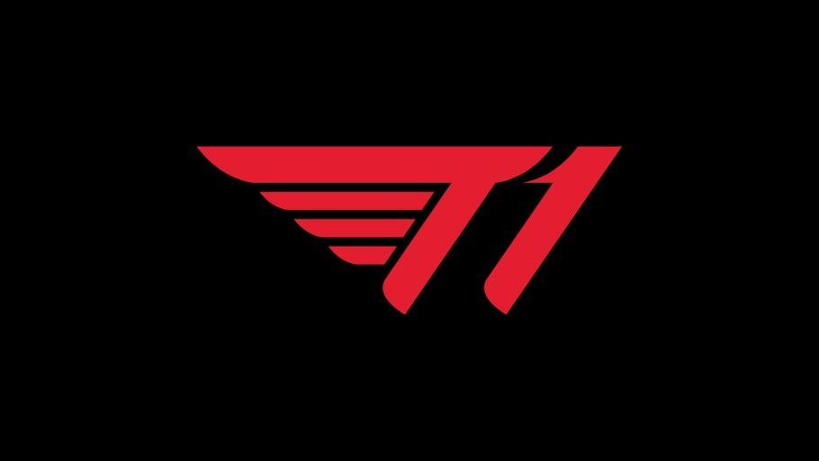

SK Telecom T1
"SK Telecom T1 (Korean: SK텔레콤 T1) is a Korean professional gaming team based in South Korea.
Previously, the SK Telecom organization sponsored two sister teams, S and K.
SK Telecom T1 is the only team to have won the World Championship three times and is also the only team to hold an unofficial "Triple Crown" - in May 2016
they became the reigning champions of IEM, the Mid-Season Invitational, and Worlds though those
titles were not all achieved in the same season, before successfully being the first ever team to defend their World Championship title."
History
"Season 3 In December 2012, SK Telecom acquired the roster of Eat Sleep Game, with a roster consisting of Reapered,
H0R0, MighTiLy, UandME, and StarLast. See the history of that team at SK Telecom T1 S (originally SK Telecom T1,
then SK Telecom T1 #1). In February 2013, the organization created a new roster, which consisted of Faker,
bengi, Piglet, PoohManDu, and Impact. See the history of that
team at SK Telecom T1 K (originally SK Telecom T1 #2). On November 12, the sister teams were renamed from #1 and #2 to S and K,
respectively. Though it was initially known as SK Telecom's secondary team, K outperformed S, winning the Season
3 World Championship. Upon their return to Korea, SKT T1 K became the only team to have a perfect season (not losing a single game) in Champions Winter 2013-2014."
SKT Team
Thank you for reading this.